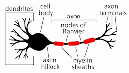
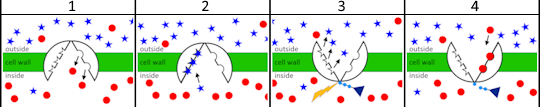
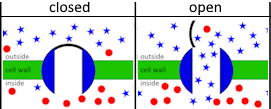
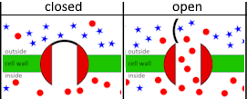
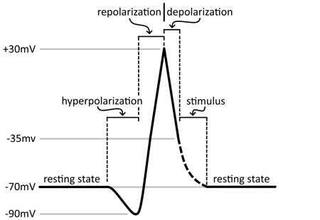

This essay is the latest in a series of attempts to discover what I believe — this time taking Stephen Wolfram’s ideas about computation into account.
My
current position, presented here, is as follows:
The perceived Arrow of Time is an intrinsic property of the Universe itself.
This seems obvious in retrospect: The Universe seems to have been evolving before we became part of it, and all aspects of the Universe continue to evolve — including our tools, beliefs, mathematics and institutions.
Importantly, The Arrow of Time is not caused by entropy.
I agree with many people about lots of things, but ideas will only evolve if serious objections are raised and discussed. Appeals to higher authority are not allowed.
For example:
despite agreeing completely with Hoffman and Kastrup that perception is an interface, I believe that consciousness is not fundamental.
I agree with Wolfram, that computation is fundamental, but I’m not entirely happy with some of his conclusions. (This is probably due to my background in music notation theory, and because we use the word "Universe" differently.
See the Appendix below.)
This essay was sparked by an email from an old friend, Alan Brett,
who contacted me unexpectedly while I was thinking hard about Stephen Wolfram’s work.
Alan Brett is a professional ’cellist. We were both members of an ensemble that performed experimental music at the Cockpit Theatre in London in the early 1970s. (Among other things, he played voice IV in the first public performance of my Possible Developments in 1971.) Other members of the ensemble included Oliver Knussen and Simon Bainbridge.
Alan and I are both veterans of the 20th century music notation crisis. He had gone on to give many first performances, while I had become a computer programmer.
Most interesting, from my point of view, was that he was an active member of Cornelius Cardew’s Scratch Orchestra in the early 1970s. I had missed out on being a member myself, so was very happy and interested to find out more. That’s an important chapter in 20th century music history!
Alan and I were immediately able to establish a good rapport because we had lots of shared context in the world of New Music. But he’s not a computer programmer, so trying to explain my thoughts on Wolfram and computing was not so easy. To do that, I needed to sort those ideas out properly first, and then present them on a broader canvas.
In the present case,
“sorting my ideas out” meant studying
neurons enough to support what I was thinking — but that does not mean that I have become a neuroscientist!
If I’ve made any mistakes, I would be glad to have them pointed out.
It’s important to get interdisciplinary agreement as to the facts, but it is perhaps even more important that the discussion begins at all. If there’s a problem, agreement can be reached later. Establishing some kind of common context (getting on the same page) is everything when crossing disciplinary boundaries.
My own background is rather special: An interest in contemporary music notation led me to becoming Karlheinz Stockhausen’s principal copyist from 1974-2000. That work, and my own compositions, meant that I started programming very early on (1981). So, for decades I have been following the development of programming languages while thinking hard about the differences between clock time and perceived time in music notation.
In trying to be precise, I have structured
this text like a computer program: It begins with an axiom and a set of definitions that pin down the critical terms. The definitions are followed by a short statement of the main argument, followed by more detailed background information about the terms being used (subroutines).
Comments (ancilliary information) are contained in in-line boxes.
Note that the definitions were continuously refined as I discovered mistakes in drafts of the background information. Writing is a process, but the process continues. This is just a snapshot.
Definitions
External definitions (paraphrased from Wikipedia and other sources)
Qualia are private, subjective sensations (e.g. the redness of red).
Spacetime is the entity beyond the dashboard that we experience as space and time on this side of the dashboard. Physicists use mathematical models to describe it.
Sensory neurons convey information from tissues and organs to other neurons.
Motor neurons transmit information from other neurons to muscles or glands.
Discussions of time have always been plagued by linguistic ambiguities, so
the following list describes what I mean by the following terms, as precisely and succinctly as I can.
These definitions have evolved while writing this essay.
They are the result of discovering logical mistakes
while describing them in more detail.
More detailed discussion can be found in Beyond the Definitions.
Discussion of the individual terms can be found at their respective links.
perception is the process that begins when a sensory neuron fires.
consciousness is the awareness of space and time (as separate entities).
memories are related to the current, evolving state of a brain.
An object is a thing in space that is perceived to exist.
An event is an occurrence in time that is perceived to happen.
A duration is a quantity of time, related to memory.
A neuron is the physical instantiation of an irreversible function in the brain.
The function can be summarized as follows:
create a rest state containing stored energy.
The energy is stored by continuously running sodium-potassium pumps embedded in the neuron's cell wall.
Each pump is also the instantiation of an irreversible function. But that function calls no lower level functions. It just uses basic objects (molecules) that can be described using the (reversible) laws of physics.
Neurons tick irreversibly, even though the laws of physics describing the low-level objects on which they rely are actually reversible.
The perceived Arrow of Time is a private, subjective experience (a quale) that is the result of aggregating the effects of many neurons ticking irreversibly in parallel.
Like the swarming of fish or birds in nature, rules governing the behaviour of individuals in the swarm lead to fluctuating waves in the swarm itself — whereby the waves inherit the irreversibility of the constituent individuals.
In brains, these waves are concentrations of firings of neurons, not waves of the neurons themselves. And brains are not structurally homogenous (like water or air), so the way the waves of firings propagate depends both on the neurons that happen to be in the vicinity and on whether those neurons happen to be firing.
Beyond the Definitions
Axiom
Each observer is part of the Universe observing itself.
I think this is self-evident. Nobody is outside the Universe. Note that “the Universe” is a black box here: We have no idea what else is in there. A consequence of the self-reflectivity is that there will be blind-spots. There are blind-spots in all systems that try to look at themselves. For example
Gödel’s theorem in mathematics.
Singularities in otherwise working models of the Universe.
There is a blind-spot in each eye-ball. The blind-spot can only be observed in each eye separately, using a well known method that involves closing one eye and holding up two fingers.
I have never seen my own eyes, the back of my own head, or even myself entirely, without using a mirror. If I use a mirror, I can’t see what is behind that. If I use another mirror to see what's behind the first one, I can’t see what is behind that. And so on indefinitely...
A two-dimensional observer embedded in an unbounded two-dimensional surface will never see the point at which the surface intersects itself if it happens to do so (e.g. the observer is in the surface of a Klein bottle). And, even if the observer suspects that it is ultimately embedded in an object having more dimensions, it has no way to tell how many dimensions that object might have.
There is no way to
have any certain knowledge about the blind-spot, so its probable that neither our mathematics nor our language will be capable of describing it.
In the 1980s, I condensed this thought into a little poem:
that more is
but beyond words
is will be misunderstood
The Dao that can be told is not the eternal Dao...
Perception and Consciousness
As defined above
perception is the process that begins when a sensory neuron fires.
consciousness is the awareness of space and time (as separate entities).
Perception is our input interface to the outside Universe.
Note that this definition of perception includes both conscious and unconscious perception. When asleep, the senses of touch and hearing still affect the subconscious nervous system to which they are attached, but both senses have reduced range because we are immobile. When dreaming, our sense of sight seems to be connected to a strange world where space and time are less separated than they are when we’re fully conscious.
In dreamless sleep, when sight is switched off completely, we have no sense of space or time at all. We are (axiomatically) part of the Universe looking at itself, so dreamless sleep is presumably when our brains are just working in the way the Universe itself works (not in separate space and time).
Neuroscientists studying the behaviour of brains need to remember that they are studying objects and events in their own space and time. This is especially important when studying brains that are asleep and not dreaming!
According to these definitions, perception and consciousness are part of the strategy the Universe uses to look at itself. So while I agree completely with Donald Hoffman
that perception is an interface, and with Bernardo Kastrup’s “dashboard” model, I don’t agree that consciousness is fundamental to understanding the Universe as a whole. The Universe is larger, and more complicated than we can ever imagine because we are part of it.
This also means that I think metaphysical speculation about what is out there, beyond the dashboard, will go nowhere on its own.
Our best tool for investigating the way the Universe really works is mathematics combined with empirical experiments.
And the mathematics has to evolve as we understand more about what’s going on.
So, to be useful, metaphysical speculation needs to be used to suggest mathematical models and even, possibly, new mathematics.
Memories and Qualia
As defined above
memories are related to the current, evolving state of a brain.
qualia are private, subjective sensations (e.g. the redness of red).
Memories are created while we are conscious, and later processed while we are asleep — in particular during dreamless sleep, while we are unconscious (while we have no notion of space or time). So we can assume that memories are stored in the inscrutable world beyond the dashboard of experience — in the way the Universe really works, not the way we perceive it working on this side of the dashboard.
It’s only when conscious, that we have access to the memories’ meanings. For example, when conscious, we can remember the name of a particular childhood friend (e.g. "Peter"), together with all the concepts with which “Peter” is vaguely associated. This meaning has much in common with a quale.
Both meanings and qualia:
require consciousness
are non-spatial
are non-temporal
are private
are not reducible to physical description (the structure of neurons etc.)
are interpretations of the underlying reality.
This suggests that both meanings and qualia should be amenable to mathematical modelling.
Experiments designed to test a mathematical model of meaning might even shed light on the Hard Problem of Consciousness, and vice versa.
Mathematics
Mathematics can be used as a tool for modelling the Universe. It is not the Universe itself.
And it evolves: The mathematics describing quantum mechanics was only conceivable in the 20th century, and was necessarily preceded by Hamiltonian, Lagrangian and Newtonian mathematics, and such things as irrational numbers, non-Euclidean geometry etc.
The mathematics that is used to model the Universe is there to suggest testable experiments, and new mathematics can be invented when the old models fail to match the results. If a model is not quite right, we try to improve it.
This has been the only way to proceed in physics since physicists were forced beyond the realm of our senses (in the 20th century). Niels Bohr famously said:
When we go beyond the realm of our ordinary senses,
we must be prepared to abandon the idea that we can visualize what is going on.
My own intuition is that the mathematical models used to describe the Universe should avoid infinities. I’m a finitist.
I
also prefer non-probabilistic explanations if they are available — but this restriction is less easy to pin down: Sometimes we don’t really know if a mathematical symbol is purely probabilistic or not (e.g. Schrödinger’s ψ). It’s just a feeling that probabilistic “explanations” don’t really explain anything, and are just papering over the cracks. “God does not play dice.”
However, we also know from Gödel, that none of our mathematical systems can be complete, so
there is no guarantee that the models can ever be completely correct. We have no access to ultimate reality. This is, in my view, a further instance of the inevitable blind-spot that results from our being part of the Universe observing itself.
space and time (in all notations)
All notations, including mathematics, computer programs, music notation and ordinary text, are written on some permanent medium (paper, screen space, computer storage media), and the way the symbols appear on the page (in space) affects both their context and legibility.
(Legibility is especially important for real-time reading in music notation.)
The whole point of the physical medium is that it is time-independent. Information can be retrieved at any time after it has been written down. Writing is important because it gives us time to think while developing a coherent narrative!
The meanings of the symbols used in mathematics are special, in that they are independent of their context:
In time: mathematical proofs can either be read sequentially or used abstractly as a whole. They are always simply true or false, both in detail and as a whole.
Time is of no consequence.
In space: how the proof is printed on the page (layout, typefaces etc.) is completely irrelevant.
This is why mathematics can be used to describe clockTime, without space or time getting in the way. All that really matters is the timelessness of the symbols themselves.
The situation is different in ordinary text and music notation where the meanings of the symbols are not fixed, but are context dependent.
That mathematical symbols mean exactly the same thing wherever they appear in a proof is the reason why mathematics does not apply to the Arts. The Arts deal with unique, context-dependent objects, so there are no equations. In maths A=B is the same statement as B=A. In the perceived world, A=B is never completely and precisely true. There are always shades of meaning. The meaning of a symbol in the real world, always involves the independent, undefinable context in which the symbol appears. This idea relates to “chunking” — what Hillary Lawson calls “closure”.
functions
need space in which to be written and read (in mathematics, programming languages and physical objects).
can have zero or more input values, and zero or more output values.
can be recursive, and/or call other functions, and/or use primitive data.
can never run backwards (from output to input).
that are symbolically instantiated (in pure mathematics) require no energy and therefore no time to run.
that are physically instantiated in an object require time and energy in order to run.
Examples are physical clocks, computer programs or neurons, none of which can be run backwards:
Atomic clocks: The vibration frequency of the controlling atom cannot be changed by changing the numbers on the clock’s display.
Mechanical clocks: A pendulum cannot be swung by pulling on the clock’s pointers.
Computer programs: The input can never be inferred from the output. Answers do not define questions.
Using x = f(x) in a computer program sets the variable x to the output value of the function. There is only one function ( f(x) = x ) that always returns its input, leaving the variable x unchanged, but we have no guarantee that that is the function being used. It might instead be a function that returns its input 10000 times, and then returns some other number. Programs cannot rely on induction, since that would cause them to crash unpredictably!
See also: Computation and Time in On Stephen Wolfram in the Appendix below.
Neurons: The output (a spike) can be the response to many different inputs.
Note that energy and perceived time are equivalent: Energy can be converted into perceived time, and vice-versa. (see tick and sodium-potassium pumps)
Time Types
now: the duration in which we are conscious.
We are never conscious ten minutes ago. We need to be conscious in now in order to perceive objects and events.
Notes
Perceived information, received in now, is stored in memory (the current, evolving state of the brain).
When unconscious, now takes on a different meaning.
in dreamless sleep we have no sense of space or time at all (so there is no now)
when dreaming, we are in a parallel world in which space and time are only vaguely related to the space and time in the world to which we will return when we wake up. Dreams are processing memory, not adding to it.
perceivedTime: is the nows that have been memorized.
Note that perceivedTime is not a sequence, but part of the state of an evolving memory (that is retrieved in conscious now).
It’s only when
fully conscious (in now) that we both have access to existing memories and can create new ones. Memories are processed while we are asleep.
Our accumulated memories define who we think we are. But it is not always easy to remember the sequence in which the information was stored. The processing of memories leads to information being changed and reorganized, so our identity changes gradually as the cycle of sleeping and waking up continues.
It’s interesting to note that perceived time appears to fly by more quickly when we are in states of deep concentration. While this may have to do with particular regions of the brain, it would seem to corroborate the relation between perceivedTime and neuronal activity (swarms of neuron firings). See also Temporal Illusions in Wikipedia:Time Perception.
clockTime is measured using standard units (hours, minutes seconds etc.).
Note carefully that
Now (consciousness) is necessary before we can measure anything, so clockTime depends on perceivedTime.
ClockTime is always measured using external, physical apparatus.
The standard units of clockTime are defined using the relation between a standard, persistent object and the events that it naturally produces.
ClockTime is not restricted to the range of durations in perceivedTime. Shorter durations are measured by devices such as slow-motion cameras or oscilloscopes. Longer durations are measured using carbon dating and other methods.
mathTime is an abstract (unperceived) entity represented by mathematical symbols in the laws of physics.
Currently, the symbols for mathTime can be the simple (space-equivalent) variable in Newtonian physics, or a temporal component in relativistic spacetime or quantum mechanics.
It is well known, that the current laws of physics contain many symmetries. In particular, reversing the direction of time, or the directions of space, appears to make no difference to their (empirically tested) validity.
This is in sharp contrast to our perceived world, but should be no surprise given
what Bohr says about visualizing what is going on beyond it.
For Einstein, reversing the direction of a "measuring rod" makes no difference to his argument but, for us, reversing the direction of a ruler changes the result (the sign of the magnitude). Nevertheless, Einstein's mathematical model is undeniably better* than any other model we have. So I think we have to accept that his spacetime is intrinsically reversible, while perceived space and time are not...
* "Better" simply means empirically tested. Relativity
is concerned with speeds and energies that we are not designed to perceive, so the decisive experiments are outside that range. Nevertheless, the model also works at perceptible scales — its just that the effects are too small for us to notice.
The following indictation that there is a real discrepancy between the reversibility of “spacetime” and “space and time” is worth mentioning here:
It seems to be impossible to measure the speed of light in one direction. All measurements of the speed of light involve measuring the time it takes for light to travel from its source to some other point and back again.
A tick is an imperceptible entity consisting of an energy spike followed by a duration.
In the neurological literature, the spike is called an “Action Potential”. In this essay, I also refer to it as a “signal”.
Note that:
A function that creates a tick must consume energy to create the spike.
The spike’s duration is so short that it can be ignored in the function that created it. Spikes are therefore invisible to higher level functions.
A tick’s duration is often shorter than the threshold of time perception (generally assumed to be ca. 10 milliseconds). As always, external apparatus can be used to measure its clockTime.
Mathematical models use functions that don’t consume energy, so they cannot tick. (See functions and On Stephen Wolfram)
A tick is an imperceptible quantum of time. Each tick has an instantaneous onset-time (tick.time) and an abstract duration (called a tick).
That definition was sufficient for defining a file format that stores a single thread of clockTime for later interpretation by a machine.
I believe that perceivedTime is related to waves in swarms of neurons, so the current essay describes ticks that are created by multithreaded functions (neurons firing in parallel) that each evaluate multiple inputs. The present definition therefore has to include the notion of a spike, and not use the notion of a quantum. It’s interesting that ticks are imperceptible in both definitions...
Neurons
The technical information in this essay is correct to the best of my knowledge, but it should not be relied upon.
Corrections and suggestions for improvements would be much appreciated.
See Useful neuron links below.
Top level structure

Neurons are the basic units of the nervous system. There are three types:
interneurons connect neurons to other neurons
sensory neurons convey information from tissues and organs to other neurons
motor neurons transmit information from other neurons to effector cells in the body
Each of these embodies a function that does essentially the same thing: Evaluate the inputs to decide whether or not to send a signal along the axon to the outputs.
The interneuron, shown above, evaluates the information coming from its dendrites (in a small region called the axon hillock) to decide whether it should “fire” or not. If the neuron fires, the signal travels down the axon to the axon terminals, where it is passed to another neuron.
To make this work, the neuron’s outer membrane contains
sodium–potassium pumps and ion gates. The sodium-potassium pumps run continuously to maintain the neurons resting state in which there is an electrical potential across the cell membrane. The ion gates are triggered at precise times to create the signal (spike, “action potential”) that moves along the axon.
Remarks:
One-directional mechanisms of this sort are found throughout biology: Life depends on the Arrow of Time.
The above description is an example of the Universe observing itself. I am using my neurons to describe neurons, and you are using them to read what I wrote. This is the familiar use/mention distinction that is important in programming. (This also resonates with Wolfram’s emphasis on “computation”).
PerceivedTime is related to the firing of neurons not to clock time. We don’t have little mechanical clocks in our brains. I think perceivedTime is the perception of waves in the firings of swarms of neurons... Perceived time is what those waves mean (a quale).
Sodium-potassium pumps
These pumps run continuously to maintain different concentrations of sodium and potassium ions inside and outside the neuron.
Both the sodium ions (here, blue stars) and potassium ions (red disks) carry a positive charge. The pump opens and closes continuously, opening towards the outside of the cell when it receives energy from a phosphate delivered by an ATP protein.
The
following cycle repeats about 100 times per second moving a maximum of two potassium ions and three sodium ions per cycle. In the absence of other processes, this maintains a stable electric charge of -70mV inside the neuron.

Potassium ions, collected during the previous phase of the cycle, are released into the interior of the neuron. The collected ions move into the neuron regardless of the current dominance of potassium ions already there.
Sodium ions are collected by the pump while it is still open on the inside.
Energy, provided by a phosphate coming from an ATP protein (dark blue triangle), causes the pump to change its configuration so that it opens towards the outside of the neuron. The collected sodium ions are released outside the neuron regardless of the current dominance of sodium ions already there.
The ATP protein, having expended some energy, detaches from the pump, and two potassium ions are collected. When the energy has been used up, the pump opens again to the inside of the neuron, and the cycle continues.
Neurons have a structure that is on a higher level than that of the ions, so they must have evolved later, and the Universe must be evolving intrinsically. Reductionism is simply wrong.
Note carefully that
The pumps cannot be run backwards (to create energy from the electro-chemical imbalance across the cell wall). Each pump embodies an irreversible function.
The neuron uses a different irreversible function (using dendrite inputs) to output the stored energy as spikes (action potentials) — see below.
The ions disperse naturally at each stage in the above cycle. The second law of thermodynamics (Entropy is always increasing) is never violated on the level of the ions.
Notes about Entropy
The Universe appears to have discovered how to store energy by running entropy backwards at the level of its neurons.
Entropy is a term that should be used with great caution: It is a technical term, used in mathematical physics, to denote a probability of disorder. It is not a physical quantity like energy, but an empirical description of how low-level particles behave in a higher level container when no extra energy is added to the system. Their intrinsic
vibration or positional uncertainty leads to their diffusion.
It’s a common mistake to think that a probability can cause anything:
Entropy cannot cause the Arrow of Time.
Entropy cannot cause processes to be irreversible.
(The Wikipedia article on Entropy currently says: “A consequence of the second law of thermodynamics is that certain processes are irreversible”. Irreversible processes may be instances of the second law, but they are not consequences of it.)
So the word entropy comes with lots of dangerous conceptual baggage. Ideally, I’d prefer to avoid it altogether and use words like "natural dispersion" instead.
Sodium ion gate states

When a sodium ion gate opens, sodium ions stream into the interior of the neuron owing to the chemical gradient.
The electrical charge inside the neuron increases.
Potassium ion gate states

When a potassium ion gate opens, potassium ions stream out of the neuron owing to the chemical gradient.
The electrical charge inside the neuron decreases.
Action potential (spike, signal)

The spike is created in four stages between resting states:
stimulus: If the stimulus creates a voltage greater than -35mV, the depolarization stage is triggered, otherwise no signal is created and, if no more stimuli arrive, the state returns to resting.
depolarization: The sodium gates open, allowing sodium ions to enter the neuron. This increases the electric potential across the neuron's membrane from -35mV to +30mV.
repolarization: The sodium gates close and the potassium gates open, allowing potassium ions to leave the neuron. This decreases the electrical potential across the neuron's membrane again. The potassium gates then begin to close.
hyperpolarization: The potassium gates are completely closed when the potential reaches -90mV. This is a hyperpolarized state (a state less than the -70mV resting state). The sodium-potassium pumps (which run continuously) eventually restore the 70mV resting state potential.
The stimulus that creates such a wave, comes either from the axon hillock or from an existing wave in the axon. The sodium-potassium pumps take a little time to reset the resting state during hyperpolarization, so the wave is asymmetrical and always propagates from left to right in the above diagram (in one direction) along the axon.
This propagation process can be thought of as being like the falling of a row of dominoes whose “resting state” is “standing up”. Once they have fallen, the dominos have to be stood up again before another “signal” can be sent. In neurons “standing the dominoes up” is done continuously by the sodium-potassium pumps.
Many neurons are encased in myelin sheaths separated by “nodes of Ranvier”. In such neurons, the signal “jumps” from one end of a myelin sheath to the other, and ion gates only open and close in the nodes of Ranvier. This greatly increases the signal’s speed while reducing the energy needed to maintain it. Such sheaths are often found on longer axons — for example those connecting the feet with the backbone.
In humans, the slowest neurons (having no myelin sheets) have a signal speed of about 1 metre/second, while the fastest (with myelin sheets) have a signal speed of about 120 metres/second.
Probabilities
Entropy is an instance of a problem that affects all probabilistic descriptions: They are global descriptions of low level phenomena, and therefore cannot explain what is really going on at the lower level. "Entropy", for example, abstracts away the behaviour of the low level particles with which it deals, so can tell us nothing about why they disperse.
Current quantum physics also involves the use of probabilities. That does not, of course, mean I think it is wrong but, in spite of Bell’s inequality, I’m still open to the idea of low-level “hidden variables”. I think its possible for “hidden variables” to be completely inaccessible to our senses. Possibly they are detectable using experimental apparatus, possibly not.
Another way to deal with the situation is to “shut up and calculate”. In other words, forget about trying to say precisely what the mathematical symbols might mean in the real, perceived world, and just use them to make predictions. We may think that Schrödinger’s psi ( ψ ) has something to do with probabilities, but there’s no guarantee that that is the whole story.
See also collapse of the wave function.
In my own experience (music): probabilistic (“stochastic”) methods of composition were used during 20th century, but with limited success. They can be useful when dealing with large masses of information, where relations between individual events are unimportant, but are otherwise ineffective. In contrast, the classical rules of harmony and counterpoint determine audible relations that exist between particular,
perceived events.
We are still digesting the enormous changes that have come about due to technical advances in instrumentation
(synthesizers) and audio production (DAWs etc.) but I expect local rules to emerge gradually over the next decades as the technology settles down and musicians converge on what they think sounds good.
Appendices
On Stephen Wolfram
It was while thinking about Wolfram’s work that I decided to embark on this essay, so, having written it, I want to go back and see if my thoughts have become any clearer. Why did I find him so interesting?
Wolfram and I have much in common:
We share an optimism that is rooted in our common experience of England in the 1960s.
I was 20 in 1968, Wolfram was 9, but he was an early developer...
Both of us are interested in the philosophy of mathematics
I left school with A-levels in Pure Mathematics, Applied Mathematics and Physics, and applied to go to university to study both Maths and Philosophy but failed to get a place. My maths simply weren't good enough. So I re-oriented, and ended up studying composition under Harrison Birtwistle at the Royal Academy of Music (London).
I read lots of philosophy in the 1970s — devouring Gödel Escher Bach in 1980.
My interest continues.
We were both actively engaged (outside academia) with computing and programming languages while they were being developed during the second half of the 20th century.
At the time, the field was in its infancy and pretty volatile. I kept up as best I could, learning from magazines and handbooks, and by solving concrete problems.
My first computer was an Apple II in 1981. I could see that computing was going to be a key technology in future,
and did not want to miss the boat.
I also had an interesting use-case: I wanted to use the machine to compute Krystals for a composition I was writing. Krystals are an Abstract Data Type, related to controlled chaos, that I had developed in the 1970s.
See A short introduction to Krystals.
We both used programming (a new kind of writing) as a means of clarifying and building on ideas. Like hammering pitons in while climbing mountains.
It was during this period that various fundamental programming constructs emerged. The subroutine (functions), libraries, interfaces, classes, objects etc. Many of these have profoundly
affected the way modern philosophers now understand the Universe.
We agree that computation is fundamental.
It was probably a remark by Wolfram about the weather being a form of alien intelligence, that sparked the insight that computation may also have been implemented in nature.
But our backrounds in the Arts and Sciences are very different, so its not surprising that we come to different conclusions.
The following sections of course contain my opinions.
I’m more interested in making progress by correcting them than convincing everyone that I’m right. So, if I’ve misunderstood Wolfram, or made any real mistakes, or anyone else wants to make progress by debating these issues, please get in touch. My email address is
here.
Reductionism
Wolfram inherits the reductionist tradition of physics. This is the belief that physics will eventually arrive at a Theory of Everything once the material world has been completely understood. There are several objections to this:
Physics relies on mathematics and computation, but
Gödel tells us that mathematical systems can never be complete.
Turing tells us that there are uncomputable numbers.
Physics does not include a model of its (biological) observers.
One of the major things we have learned from the development of programming languages is that systems have radically different behaviours at different information levels. Interfaces isolate those levels from each other.
Biological observers (on a higher information level than the material of which they are made), distinguish between clock time and perceived time.
Physics is hugely powerful at the level of materials, but it is limited to that domain.
Physics assumes that the laws it is trying to discover are eternal.
I think this is a relic of pre-renaissance thinking.
The Universe actually evolves intrinsically — so we can't reliably extrapolate backwards or forwards. Was the Big Bang a change
of information level, comparable to the advent of biology?
I agree completely with Wolfram’s conclusion that the Universe cannot know in advance how it is going to evolve, but think that this is due to reductionism being wrong. Nature takes advantage of new situations to create unforseeable behaviours.
As Stuart Kauffman points out, a stomach worm cannot evolve until there is a stomach.
The Two Cultures
Wolfram’s book "A New Kind of Science" makes the claim that computing is more fundamental than mathematics. He is saying that physics, which has been dominated by mathematics since the 16th century, is in future going to be dominated by computers. He is right, of course. The way mathematics is done has itself changed as the result of
computers becoming generally available.
But I don’t think he fully realises the consequences of this conclusion.
Computation affects much more than just mathematics and physics:
Biology (nature) also uses computation. (Neurons are functions.)
Programs, written by humans, also affect the Arts (and society in general).
In other words, Wolfram’s New Kind of Science needs to be subsumed into a New Kind of Culture, thus overcoming the Two Cultures problem described by C.P. Snow in 1959.
The Two Cultures problem arose, I think, because mathematical physics cannot, after all, provide a complete Theory of Everything, so an alternative, non-mathematical culture evolved in parallel. The context for that evolution has now changed sufficiently for that evolution to take a new turn. It now includes:
generally available computers
advances in biology (neuroscience)
Artificial Intelligence
An adequate history of the way the Two Cultures diverged over the past 500 years needs to be written, but is (sadly) beyond the scope of this essay.
Computation and Time
As defined above, a function is the basic unit of structure in computation, but the functions used in mathematics are different:
In mathematics, functions are timeless. They do not run, but simply are.
In computer programs, functions require time, energy and either lower level functions or primitive data.
With a background in the algorithmic composition of scores (spatial objects) that have to be interpreted in perceivedTime, I see the products of Wolfram's cellular automata (and programs like The Game of Life) as not really modelling perceivedTime at all, they are modelling sequences of spatial diagrams whose space is then interpreted as clockTime.
Mathematicians and physicists generally use clockTime.
The failure to distinguish between clockTime and
perceivedTime also lay behind the 20th century music notation crisis.
Programs may be able to model quantized clockTime by generating sequences of diagrams, but there’s another problem: They don’t tick. They depend on a level of interpretation that assumes both an Arrow of Time and that clockTime is related to the difference between two diagrams. But there is no time dimension between two spatial objects in space, so how is a perceived time dimension supposed to arise?
PaceJulian Barbour! Barbour thinks that time is an illusion. We could agree about that if we are talking about time on this side of the dashboard, and that everything on this side of the dashboard is an illusion. I believe, however, that there is a reality beyond the dashboard that affects what we experience. So I think the word “illusion” is misleading. It would be tautological to think that perceivedTime could just be an internally invented fantasy.
Programs that tick can, of course be written, but they rely on an underlying system clock that generates regular, abstract events.
I have always felt that music, as a form of human communication, needs to be expressive, and that this property got lost with Neo-classicism (the reaction against Romanticism at the beginning of the 20th century). I have always wanted to find a way to let music breathe again, as it did with Brückner and other late Romantics...
This was the problem I was trying to address with my Assistant Performer (documentation/application). The first step was to separate the spatial from the temporal information by using a file format for the scores in which event symbols contain linked but separate spatial and temporal (SVG-MIDI) information.
It turned out, that assisting performances is like conducting them — but I could not get beyond the use of physical input devices (mouse, MIDI-keyboard). The problem is that conducting uses visual cues, and that visual cues can be anticipated.
Expressive AI performances of music are currently trained on audible temporal data (recordings of performances) and best performed on a single (analog) instrument.
AI performances of music for multiple instruments also need to be trained on visual temporal data (recordings of conductors).
Imagine a real or robotic conductor, standing in front of an orchestra of real or robotic performers... 😀 All such real and robotic performers need to be aware of both audible and visible data, so both kinds of data are needed for training them. Even robotic orchestras need to rehearse...
Here are some questions that would best be answered in some interdisciplinary forum. This is an invitation to point me at such a place, and/or engage in a private discussion — including constructive criticism and new questions. My email address is here.
Unaskable questions
Many questions
contain hidden assumptions that make them invalid (For example: “Does God exist?” assumes that we agree on what “God” means).
Words (metaphors based on our perceptions) can only be pointers to something more abstract that may have no correspondence on this side of the dashboard. Even the word “exist” needs to be treated with caution.
Questions that have no proper answer are not really questions at all. They are logical mistakes.
This attitude has much in common with Daoism and other mystic traditions that forbid the naming of God. (See also: Theories of Everything: Interview with Stuart Kauffman
In the same way, I think Bernardo Kastrup’s “universal mind” is misleading...
The best questions are those that can be answered in the near future and lead to an expansion of our conceptual horizons — for example, by suggesting new mathematics.
The best answers are those that can be checked empirically on this side of the dashboard.
The direction of mathTime
MathTime (the mathematical model of time in current physics) is agnostic about
the direction of its arrow, but it models clockTime, which is observed (in perceivedTime) to be irreversible. The question is therefore: Should mathTime be modified so that it is irreversible (to be consistent with clockTime), or should it remain reversible?
My intuition is that time symmetry is probably part of the way things really work beyond the dashboard. It’s consistent with the symmetries that exist in all the other dimensions:
In 1 dimension, a 0-d object (a point) can be reflected about another point.
In 2 dimensions, a 1-d object (a line) can be reflected about another line.
In 3 dimensions, a 2-d object (a plane) can be reflected about another plane.
In 4 dimensions, a 3-d object can be reflected about another 3-d object (left- and right-handed crystals).
In 5 dimensions, a 4-d object can be reflected about another 4-d object (matter and antimatter?)
If mathTime is to remain reversible, then either negative time is simply ignored by our perceptions (its a blind-spot) or mathTime must be able to flow against the direction of perceivedTime.
Interestingly, this question relates to the measurement of the speed of light:
It’s well known, that the speed of light can only be measured in two directions — by sending it from a source to a target and back. If the direction of space is reversed during the measurement, and mathTime is reversible, can a negative value for mathTime also be used during the return trip?
If that were done, no mathTime would pass overall, and the speed of light would be measured as being infinite. That would be consistent with perceivedTime: We perceive both distant stars, our measurement apparatus and “spooky action at a distance” in now.
Whatever the answer turns out to be, the discrepancy between mathTime and perceivedTime seems to be evidence for the blind-spot in our perception that I think results from our being part of the Universe observing itself (from both the inside out and outside in).
Collapse of the wave function
The following argument seems to agree with Wigner’ conclusion. But is it correct?
That Wigner and his Freind (W and F) are both part of the same Universe implies that their observations should always be consistent.
Spelling that out: When F makes an observation, she changes her own state, and therefore the state of the Universe of which she is part. So, when W makes his observation, the state of his Universe has already changed to be consistent with what F observed.
The situation is symmetrical: If W makes the first observation, then F’s observation will be consistent with W’s.
The “collapse” (that happens during both observations), happens
as part of the process by which brains have to convert spacetime (or whatever is out there) into separate space and time.
From this side of the dashboard, it looks as if the Universe must somehow prevent perfectly synchronous observations — but the words perfectly synchronous don’t seem to apply on the other side.
On the other side, all we can do is look at the mathematical model — in which mathTime seems to be reversible. So symmetry is preserved on both sides of the dashboard.
Wigner’s paradox probably arose because the original scenario is trying to use a concept(“probability”) that fails to capture what is actually going on beyond our perceptions.
A similar argument applies to observers looking at the double-slit experiment.
Even if the Big Bang happened, is it important?
Has the Universe always known how to run entropy backwards? What does “always” mean here? Since I’ve come to the conclusion that the Universe is always evolving, does that mean that it never had a beginning? Possibly it just means that the beginning, if that term has any meaning at all in this context, is simply of minor importance compared to what happened later.
The answer to this
question involves finitism in mathematics, limits in calculus, a clearer idea of where "entropy" fits into the picture etc...
Should the Hard Problem be replaced by a hypothesis?
As with the Big Bang, the Hard Problem may turn out to be either insoluble or simply less important than first thought.
Would it make any substantial difference to a practical Theory of Consciousness if our subjective experiences of qualia were actually different? Perhaps the Hard Problem should be replaced by a hypothesis: “All qualia are experienced in the same way by brains (nervous systems) that are similarly constructed.” This hypothesis can then be proven to be true or false in due course — but we don’t need to wait for the solution.
Axon terminals and non-locality
Does the way neurons work suggest a mathematical model for describing quantum non-locality? (There are no objects or events in the mathematics that describe quantum physics — but there are waves.)
When a neuron fires, an electrochemical wave travels down the axon. The wave splits along the way, before arriving at the different axon terminals. Each axon terminal has its own position in space and distance from the main axon. So, when the wave first reaches an axon terminal, we immediately know when and where its other branches will arrive. Do axon terminals in neurons correspond to wormhole entry points in spacetime?
How are memories stored?
Are all memories stored using the brain’s hardware? Does the brain have access to some kind of “external memory” that is accessed/processed during dreamless sleep (beyond the dashboard)? If that were the case, there could also be two-way interactions between the Universe (as it really is) and unconscious brains.
I suspect that (at least) seldom required memories could be stored beyond the dashboard, "in the cloud".
The mechanism would be inaccessible to our observations but approachable using mathematical modelling once we have some idea how it works.
For example, I’ve recently been astonished by the number of names I’ve been able to recall while looking at old school photographs. These are names that I have not needed or used for many decades. It’s as if the visual reminder provided a key to unlocking memories whose existence I would otherwise have completely forgotten. Why should brains use space and energy to store such memories on board?
This immediately raises
the following questions:
Are qualia (e.g. names or the experience of redness) data primitives stored externally?
Can memories survive the death of the agent that created them?
Do the space and energy required for storing memories have anything to do with Dark Matter and Dark Energy?
Maybe this is a particularly stupid question, but I'd like to know the answer anyway! 😀
This would imply that the galaxies containing dark stuff (i.e. most of them) are accumulating memories... But the situation may be more complicated:
The Big Bang may have been a shift of information level, mathTime is reversible, and visible stuff may be interacting with the dark stuff from which it came...
These questions may have quick answers, but the answers may also need to wait until we know more about how memories are stored.
(Kastrup’s “universal mind” isn’t far away here, but I think that term is too anthropomorphic.)
Do AI systems dream?
If they are always scanning the internet, they are processing their memories — which is what we call dreaming.
Current AI systems (LLMs) are modelled on brain structures that we observe on our side of our dashboard, so they probably don’t connect to the other side of our dashboard.
I think this is the reason they don’t appear to experience qualia or time, or have real insights.
Which reminds me of my old definition of Art:
Art is the expression of insight.
External Links
YouTube channels and some selected videos
The following links have been selected from those that I bookmarked as being relevant to the current project. They are, for me, equivalent to university lectures, but without the institutional restrictions on interdisciplinarity. I've been free to look where I like for relevant information and comprehensibility across disciplinary boundaries.
Working like this requires discipline. Progress is not just a matter of attending lectures. It also requires active writing and supervision.
Writing is the best way to develop and consolidate ideas, and it can now be supported by AIs that check conclusions and provide research assistance.
So the future of interdisciplinarity is looking good, but:
It can only be fruitful if there is expert knowledge on both sides of the exchange.
This is not something for beginners.
It needs institutional frameworks that bring the experts together.
Cross-disciplinary co-operation needs experts who know how to organize it.